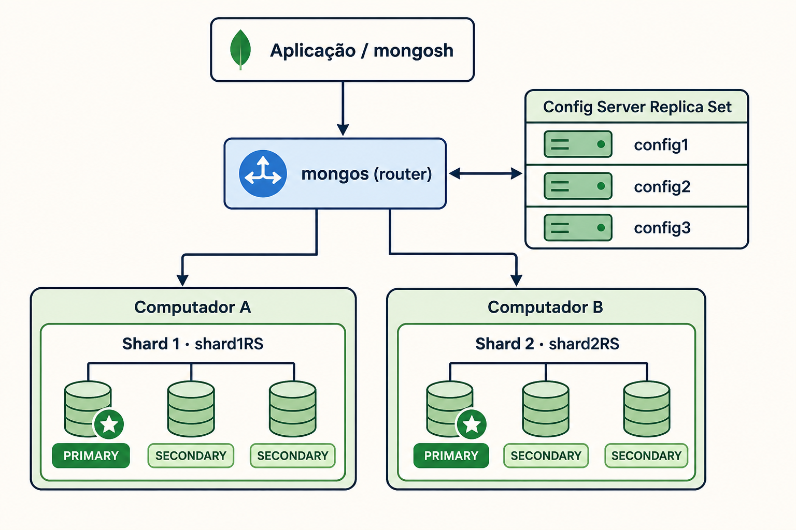
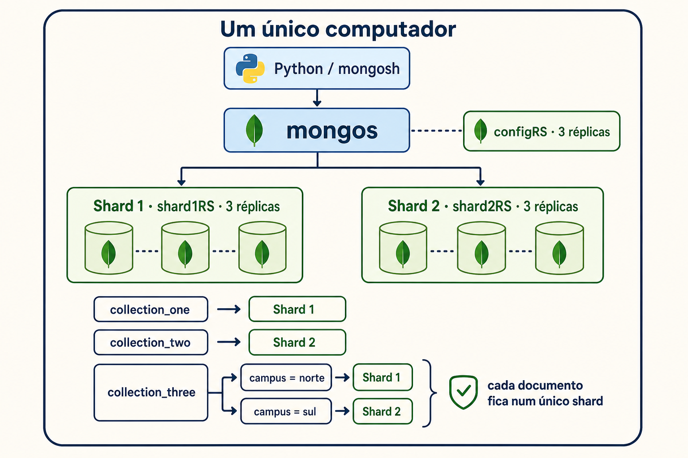

Os alunos arrancam os serviços no terminal, entram no MongoDB, compreendem cliente e servidor, observam o primary, testam a replicação e exploram sharding.
Quer apenas MySQL e phpMyAdmin?
Abra o novo guião MysqlDocker para principiantes. Inclui instalação em Windows e macOS, linha de comando, phpMyAdmin, importação de CSV e scripts, exportação e backups.
Objetivo: chegar à pasta replica-set, confirmar o Docker e arrancar o primeiro ambiente. Toda a aula é feita no terminal.
1
Instalar Docker
Instala o Docker Desktop, inicia-o e espera por “Engine running”.
2
Abrir PowerShell aqui
No Explorador abre docker-database-lab. Clica na barra do caminho, escreve powershell e carrega Enter.
3
Entrar no cenário
Executa cd replica-set.
Em computadores Windows mais antigos, ativa a virtualização na BIOS/UEFI. Se o WSL 2 não estiver disponível mas o computador tiver Windows 10 Pro, o Docker Desktop pode usar Hyper‑V. Usa sempre uma versão do Docker ainda suportada e atualizada.
1
Instalar Docker
Instala o Docker Desktop, abre-o e espera que fique pronto.
2
Abrir Terminal aqui
No Finder seleciona docker-database-lab, botão direito → Serviços → “Novo Terminal na Pasta”.
3
Entrar no cenário
Executa cd replica-set.
Exercício 1 · Arrancar e observar
docker version
docker compose up -d --build
docker compose ps
O último comando deve mostrar MySQL, PHP, Python, phpMyAdmin e os três servidores MongoDB. Na primeira execução, aguarda até o download das imagens terminar.
Conhecer a estrutura do projeto
Os caminhos dentro do Compose são relativos ao ficheiro docker-compose.yml. Por isso, podes mudar o nome da pasta principal, mas não deves mover ficheiros isoladamente sem corrigir os caminhos indicados no Compose.
docker-database-lab/
├── common/
│ ├── mysql/init/001-school.sql cria a base e a tabela de exemplo
│ ├── php/Dockerfile constrói PHP com suporte MySQL
│ └── python/ imagem, dependências e exemplo MySQL
├── replica-set/
│ ├── docker-compose.yml ambiente MongoDB sem sharding
│ ├── mongo-init/init-replica.sh cria o replica set rs0
│ └── examples/mongo_replica_example.py
├── sharded/
│ ├── docker-compose.yml ambiente com dois shards
│ ├── mongo-init/init-sharded-cluster.sh
│ └── examples/mongo_sharding_example.py
├── tutorial/index.html este guião, aberto no navegador
├── .env.example exemplo de portas e credenciais
└── README.md resumo e comandos rápidos
O que tem de ficar onde?
Elemento
Pode mudar?
Consequência
Pasta docker-database-lab
Sim
Pode ter outro nome e estar noutro local.
Pastas common, replica-set, sharded e tutorial
Sim, com cuidado
Se mudares nomes ou posições, atualiza build.context e volumes no Compose.
docker-compose.yml
Sim
Com outro nome, indica-o: docker compose -f aula.yml up -d.
Scripts SQL, Bash e Python
Sim
Atualiza o caminho do volume correspondente no Compose.
O Docker procura automaticamente compose.yaml, compose.yml, docker-compose.yaml ou docker-compose.yml. Qualquer outro nome funciona com a opção -f.
Esta é uma versão comentada, mas funcionalmente equivalente, do ficheiro do cenário de três réplicas. Os comentários iniciados por # explicam os blocos principais.
version: "3.8" # mantido para compatibilidade com Compose antigo
services: # conjunto de contentores
mysql: # nome usado na rede interna
image: mysql:8.4 # imagem descarregada do registry
environment: # variáveis recebidas pelo MySQL
MYSQL_DATABASE: ${MYSQL_DATABASE:-school}
MYSQL_USER: ${MYSQL_USER:-student}
MYSQL_PASSWORD: ${MYSQL_PASSWORD:-studentpass}
MYSQL_ROOT_PASSWORD: ${MYSQL_ROOT_PASSWORD:-rootpass}
ports:
- "127.0.0.1:${MYSQL_PORT:-3306}:3306"
# esquerda: porta no computador; direita: porta no contentor
volumes:
- mysql_data:/var/lib/mysql
# volume persistente: conserva dados após docker compose down
- ../common/mysql/init:/docker-entrypoint-initdb.d:ro
# pasta local montada só para leitura (:ro)
healthcheck: # testa se o servidor já responde
test: ["CMD", "mysqladmin", "ping", "-h", "localhost", "-uroot", "-prootpass"]
interval: 5s
timeout: 5s
retries: 30
phpmyadmin:
image: phpmyadmin:5.2-apache
environment:
PMA_HOST: mysql # liga ao serviço chamado mysql
ports:
- "127.0.0.1:${PHPMYADMIN_PORT:-8081}:80"
depends_on:
- mysql # ordem de arranque, não garante prontidão
php:
build:
context: ../common/php # constrói usando esse Dockerfile
ports:
- "127.0.0.1:${TUTORIAL_PORT:-8080}:80"
volumes:
- ../tutorial:/var/www/html:ro
depends_on:
- mysql
python:
build:
context: ../common/python
environment:
MYSQL_HOST: mysql
MYSQL_DATABASE: ${MYSQL_DATABASE:-school}
MYSQL_USER: ${MYSQL_USER:-student}
MYSQL_PASSWORD: ${MYSQL_PASSWORD:-studentpass}
MONGO_URI: mongodb://mongo1:27017,mongo2:27017,mongo3:27017/?replicaSet=rs0
volumes: # disponibiliza os exemplos no contentor
- ../common/python/mysql_example.py:/workspace/mysql_example.py:ro
- ./examples/mongo_replica_example.py:/workspace/mongo/mongo_replica_example.py:ro
depends_on: [mysql, mongo1, mongo2, mongo3]
mongo1:
image: mongo:7.0
command: ["mongod", "--replSet", "rs0", "--bind_ip_all", "--port", "27017"]
ports:
- "127.0.0.1:${MONGO_PORT:-27017}:27017"
volumes:
- mongo1_data:/data/db
mongo2:
image: mongo:7.0
command: ["mongod", "--replSet", "rs0", "--bind_ip_all", "--port", "27017"]
ports:
- "127.0.0.1:27018:27017"
volumes:
- mongo2_data:/data/db
mongo3:
image: mongo:7.0
command: ["mongod", "--replSet", "rs0", "--bind_ip_all", "--port", "27017"]
ports:
- "127.0.0.1:27019:27017"
volumes:
- mongo3_data:/data/db
mongo-init:
image: mongo:7.0
restart: "no"
depends_on: [mongo1, mongo2, mongo3]
volumes:
- ./mongo-init:/scripts:ro
entrypoint: ["bash", "/scripts/init-replica.sh"]
# contentor temporário que configura rs0 e depois termina
volumes: # declaração dos volumes persistentes
mysql_data:
mongo1_data:
mongo2_data:
mongo3_data:
Onde ficam realmente guardados os dados?
A linha mysql_data:/var/lib/mysql liga um volume Docker com nome à pasta onde o MySQL guarda os ficheiros internos. Os dados não ficam dentro da camada descartável do contentor: continuam disponíveis depois de docker compose down e voltam a aparecer quando o serviço arranca novamente.
docker volume ls
O volume aparecerá com um nome que combina o nome do projeto Compose com mysql_data. No Docker Desktop para Windows e macOS, o conteúdo físico do volume é gerido dentro da máquina virtual do Docker; não é uma pasta normal que se deva editar manualmente.
Um volume persistente não é um backup. Se o volume for eliminado, se o disco avariar ou se executares docker compose down -v, os dados podem desaparecer. Um backup deve ser exportado para um ficheiro fora do volume.
Criar um backup fora do Docker
Na pasta replica-set ou sharded, executa:
mkdir backups
docker compose exec mysql sh -c "mysqldump -u root -prootpass school > /tmp/school.sql"
docker compose cp mysql:/tmp/school.sql ./backups/school.sql
O ficheiro backups/school.sql fica no disco do computador e pode ser copiado para outro disco, servidor ou sistema de backups.
Restaurar esse backup
docker compose cp ./backups/school.sql mysql:/tmp/school.sql
docker compose exec mysql sh -c "mysql -u root -prootpass school < /tmp/school.sql"
Também seria possível substituir o volume por uma pasta local, por exemplo ./dados/mysql:/var/lib/mysql. Contudo, em Windows e macOS isso pode causar problemas de permissões e desempenho. Para este laboratório, mantém o volume e usa ficheiros SQL para backup.
Os ficheiros podem ter qualquer nome válido. Usa a extensão .sql para SQL e .py para Python.
Na pasta common/mysql/init, prefixos como 001-, 002- e 003- tornam explícita a ordem de execução.
Os scripts colocados em /docker-entrypoint-initdb.d são executados automaticamente apenas quando o volume MySQL é criado vazio. Reiniciar o contentor não os executa novamente.
common/python é adequado para programas partilhados pelos dois cenários. As pastas replica-set/examples e sharded/examples guardam exemplos específicos de cada cenário.
O nome no disco e o nome dentro do contentor podem ser diferentes. Para disponibilizar um novo programa, acrescenta ao serviço python no Compose:
Para executar novamente um SQL sem apagar o volume, entra no cliente MySQL e usa source /caminho/ficheiro.sql, ou copia-o para o contentor com docker compose cp. Não uses down -v apenas para repetir um script: esse comando elimina todos os dados do cenário.
Estes comandos também poderiam ser executados na aplicação Docker Desktop, usando o separador de terminal/exec de cada contentor. Neste guião usamos o terminal do sistema para que os comandos sejam iguais no Windows e no macOS.
Vale a pena usar contentores?
Docker não altera a forma como MySQL, MongoDB ou Python funcionam. Cria ambientes isolados e reproduzíveis onde esses programas são executados. É especialmente útil numa aula, porque todos começam com versões e configurações semelhantes.
Vantagens
Instala MySQL, MongoDB, PHP e Python sem os misturar com o sistema operativo.
A mesma configuração pode ser usada no Windows e no macOS.
As versões das ferramentas ficam registadas no Compose e nos Dockerfiles.
É fácil arrancar, parar e recriar todo o laboratório.
Os nomes dos serviços funcionam como DNS dentro da rede Docker.
Volumes permitem conservar os dados quando os contentores são substituídos.
Reduz diferenças entre os computadores dos alunos.
Desvantagens
Docker Desktop consome memória, processador e espaço em disco.
A primeira execução pode ser demorada devido ao download das imagens.
Portas ocupadas por outras aplicações podem causar conflitos.
Volumes, redes e nomes de contentores acrescentam conceitos novos.
Em Windows antigos, virtualização, WSL 2 ou Hyper-V podem ser uma limitação.
Um Compose local não substitui uma instalação de produção segura nem um orquestrador multi-host.
O código Python muda?
A parte que liga à base de dados e executa SQL pode ser exatamente a mesma. O programa recebe o endereço e a porta através de variáveis de ambiente:
connection = pymysql.connect(
host=os.getenv("MYSQL_HOST", "mysql"),
port=int(os.getenv("MYSQL_PORT", "3306")),
user=os.getenv("MYSQL_USER", "student"),
password=os.getenv("MYSQL_PASSWORD", "studentpass"),
database=os.getenv("MYSQL_DATABASE", "school"),
)
cursor.execute(
"INSERT INTO students (name, course) VALUES (%s, %s)",
("Ana Docker", "Bases de Dados"),
)
cursor.execute("SELECT * FROM students")
As chamadas pymysql.connect(), INSERT e SELECT são iguais dentro e fora do Docker. O que muda é apenas a configuração da ligação:
Python dentro do Compose
MYSQL_HOST=mysql
MYSQL_PORT=3306
mysql é o nome do serviço no docker-compose.yml. O DNS interno do Docker converte esse nome no IP privado atual do contentor MySQL.
Python no computador
MYSQL_HOST=127.0.0.1
MYSQL_PORT=3306
127.0.0.1 significa “este computador”. A porta publicada pelo Compose encaminha a ligação para a porta 3306 do contentor MySQL.
Não é o mesmo IP. Dentro do contentor Python, 127.0.0.1 apontaria para o próprio contentor Python, não para o MySQL. Por isso usa-se o nome mysql. Fora do Docker usa-se 127.0.0.1 porque o Compose publicou a porta no computador.
E a porta é igual?
Nesta configuração, sim: por omissão, a porta 3306 do computador é encaminhada para a porta 3306 do contentor. A linha é:
"127.0.0.1:${MYSQL_PORT:-3306}:3306"
porta exterior ─┘ └─ porta interior
Se definires MYSQL_PORT=13306, um Python executado no computador usa 127.0.0.1:13306. O Python dentro do Compose continua a usar mysql:3306. Assim, mantemos um único ficheiro Python e alteramos apenas as variáveis de ambiente.
Experimentar as réplicas
Um replica set tem um servidor primary, que recebe as escritas, e dois secondaries, que mantêm cópias. Se o primary falhar, os restantes podem eleger outro.
mongo1 PRIMARY
mongo2 SECONDARY
mongo3 SECONDARY
mongosh não é o servidor
mongod é o processo servidor: guarda os dados, recebe pedidos e participa no replica set. Cada serviço mongo1, mongo2 e mongo3 executa um servidor mongod.
mongosh é apenas um cliente de linha de comandos. Abre uma ligação a um servidor mongod, envia instruções JavaScript e mostra as respostas. Quando executas mongosh dentro de mongo1, o cliente liga-se por omissão ao servidor da mesma máquina, em localhost:27017.
Podias executar o cliente noutro contentor ou no computador, desde que indicasses um endereço alcançável. Fechar o mongosh não desliga o servidor.
Exercício 2 · Abrir um terminal no contentor principal
No terminal do computador, abre uma shell dentro de mongo1:
docker compose exec mongo1 bash
O prompt muda: estás dentro do contentor. Abre agora a consola MongoDB:
O primeiro resultado esperado é true. A lista deve mostrar um PRIMARY e dois SECONDARY.
Exercício 3 · Inserir no primary
Continua dentro do mongosh de mongo1:
use aula
db.mensagens.insertOne({ texto: "Olá, réplicas!", aluno: "Ana", instante: new Date() })
db.mensagens.find().pretty()
Exercício 4 · Ler num secondary
Sai primeiro do mongosh e depois da shell do contentor. Em seguida abre uma shell no segundo contentor:
exit
exit
docker compose exec mongo2 bash
mongosh
Dentro do novo mongosh:
db.hello().secondary
db.getMongo().setReadPref("secondary")
use aula
db.mensagens.find().pretty()
Uma ligação começa normalmente com preferência de leitura primary. Como esta ligação foi aberta diretamente num secondary, definimos secondary para autorizar e encaminhar a leitura para esse membro. Não usamos rs.secondaryOk(), porque esse atalho está obsoleto.
Deves obter true e ver “Olá, réplicas!”. O documento escrito no primary já foi replicado.
Para discutir: porque se escreve normalmente no primary, mas se pode ler num secondary? O que acontece durante uma eleição?
MySQL no terminal e programas Python
O ficheiro 001-school.sql cria automaticamente a base de dados school e uma única tabela chamada students.
Campo
Tipo
Finalidade
id
INT
Identificador automático
name
VARCHAR
Nome do aluno
course
VARCHAR
Curso
created_at
TIMESTAMP
Data de criação
Opção A · Cliente MySQL instalado no sistema operativo
Esta opção só funciona se o comando mysql estiver instalado no Windows ou no macOS. No PowerShell ou Terminal, ainda dentro da pasta do cenário, executa:
mysql -h 127.0.0.1 -P 3306 -u student -p school
Quando aparecer Enter password:, escreve studentpass. A palavra-passe não aparece no ecrã enquanto é escrita. Os parâmetros significam:
Parâmetro
Significado
-h 127.0.0.1
Endereço do computador onde o Docker publicou o MySQL.
-P 3306
Porta exterior publicada pelo Compose. O P é maiúsculo.
-u student
Utilizador criado pelas variáveis do Compose.
-p
Pede a palavra-passe de forma interativa.
school
Base de dados que fica selecionada após a ligação.
Opção B · Abrir um terminal no contentor MySQL
Esta opção não exige instalar o cliente MySQL no sistema, porque a imagem já o contém. O serviço chama-se mysql, conforme o nome usado no Compose:
docker compose exec mysql bash
O prompt muda, indicando que estás dentro do contentor. Abre o cliente como administrador:
mysql -u root -p
Escreve rootpass quando for pedida a palavra-passe. Dentro do cliente MySQL, experimenta:
SHOW DATABASES;
USE school;
SHOW TABLES;
DESCRIBE students;
SELECT * FROM students;
Resultados esperados: SHOW DATABASES inclui school; SHOW TABLES mostra students; DESCRIBE apresenta as quatro colunas da tabela; e SELECT mostra os registos existentes.
Para sair do cliente e depois do contentor:
exit
exit
Opção C · Executar o cliente diretamente, sem abrir primeiro a shell
docker compose exec mysql mysql -u student -p school
Escreve studentpass. Este comando inicia o cliente MySQL diretamente dentro do contentor. Ao executar exit, regressas logo ao terminal do computador.
Abrir no phpMyAdmin
Visita http://localhost:8081 e entra com utilizador student e palavra-passe studentpass. O servidor é mysql.
O programa liga-se aos três endereços do replica set, insere no primary e procura o documento pelo respetivo identificador.
Desafio curto: abre common/python/mysql_example.py, altera o nome e o curso inseridos e volta a executar o programa.
Distribuir dados com sharding
Visão geral: um cluster pode ocupar vários computadores
Num ambiente real, os vários componentes não têm de estar na mesma máquina. A aplicação ou o cliente mongosh liga-se ao mongos; o router consulta os metadados no config server replica set e encaminha cada operação para o shard correto. Cada shard é também um replica set.

Arquitetura geral: os shards podem estar em computadores físicos diferentes, desde que todos consigam comunicar pela rede.
Na imagem, o Shard 1 está no Computador A e o Shard 2 no Computador B. A figura é conceptual: numa implantação real, é preferível distribuir também as réplicas de cada shard por máquinas ou zonas de falha diferentes.
Neste laboratório: tudo corre num único computador
Para facilitar a aula, o Docker Compose cria todos os contentores na mesma máquina e liga-os através de uma rede Docker local. Continuam a existir dois shards, três réplicas por shard, três config servers e um mongos; apenas não estão separados fisicamente.

Configuração usada no laboratório: collection_one no Shard 1, collection_two no Shard 2 e collection_three dividida pelo campo campus.
Os blocos MySQL, phpMyAdmin, PHP e Python são equivalentes aos do primeiro Compose. A parte abaixo é a configuração MongoDB do ficheiro sharded/docker-compose.yml:
services:
config1: # primeiro membro dos config servers
image: mongo:7.0
command: ["mongod", "--configsvr", "--replSet", "configRS",
"--bind_ip_all", "--port", "27019"]
volumes:
- config1_data:/data/configdb
config2: # segundo membro de configRS
image: mongo:7.0
command: ["mongod", "--configsvr", "--replSet", "configRS",
"--bind_ip_all", "--port", "27019"]
config3: # terceiro membro de configRS
image: mongo:7.0
command: ["mongod", "--configsvr", "--replSet", "configRS",
"--bind_ip_all", "--port", "27019"]
shard1a: # três membros do primeiro shard
image: mongo:7.0
command: ["mongod", "--shardsvr", "--replSet", "shard1RS",
"--bind_ip_all", "--port", "27018"]
volumes: [shard1a_data:/data/db]
shard1b:
image: mongo:7.0
command: ["mongod", "--shardsvr", "--replSet", "shard1RS",
"--bind_ip_all", "--port", "27018"]
shard1c:
image: mongo:7.0
command: ["mongod", "--shardsvr", "--replSet", "shard1RS",
"--bind_ip_all", "--port", "27018"]
shard2a: # três membros do segundo shard
image: mongo:7.0
command: ["mongod", "--shardsvr", "--replSet", "shard2RS",
"--bind_ip_all", "--port", "27018"]
shard2b:
image: mongo:7.0
command: ["mongod", "--shardsvr", "--replSet", "shard2RS",
"--bind_ip_all", "--port", "27018"]
shard2c:
image: mongo:7.0
command: ["mongod", "--shardsvr", "--replSet", "shard2RS",
"--bind_ip_all", "--port", "27018"]
mongos: # router; não guarda os documentos
image: mongo:7.0
command:
- mongos
- --configdb
- configRS/config1:27019,config2:27019,config3:27019
- --bind_ip_all
- --port
- "27017"
ports:
- "127.0.0.1:${MONGO_PORT:-27017}:27017"
depends_on: [config1, config2, config3]
cluster-init: # executa uma vez e configura o cluster
image: mongo:7.0
restart: "no"
depends_on:
- config1
- config2
- config3
- shard1a
- shard1b
- shard1c
- shard2a
- shard2b
- shard2c
- mongos
volumes:
- ./mongo-init:/scripts:ro
entrypoint: ["bash", "/scripts/init-sharded-cluster.sh"]
Linha/opção
Função
--configsvr
Marca o processo como config server, onde ficam os metadados dos chunks.
--shardsvr
Marca o processo como membro de um shard.
--replSet shard1RS
Diz a que replica set pertence cada membro.
--configdb configRS/...
Diz ao mongos onde encontrar os config servers.
depends_on
Controla a ordem de arranque dentro deste Compose; não cria uma rede entre computadores.
cluster-init
Monta e executa init-sharded-cluster.sh, que inicia os replica sets, adiciona os shards e configura as zonas.
Importante: não existem documentos duplicados. As duas primeiras coleções ficam cada uma num shard; a terceira é repartida pelo campo campus.
Regra usada no exemplo
collection_one
→
toda no Shard 1
collection_two
→
toda no Shard 2
collection_three · campus = norte
→
Shard 1
collection_three · campus = sul
→
Shard 2
Antes de mudar de cenário
Para o primeiro ambiente, porque ambos usam as mesmas portas:
docker compose down
Depois abre a pasta sharded e executa:
docker compose up -d --build
Este cenário inicia vários processos MongoDB e precisa de mais memória; reserva idealmente 8 GB ao Docker Desktop.
O insertMany devolve acknowledged: true e dois identificadores. O find mostra Beatriz com campus=norte e Carlos com campus=sul.
Colocar um shard noutro computador
O Compose deste laboratório é local. Os nomes shard1a, config1 e semelhantes só existem na rede Docker do mesmo computador. Mudar apenas um nome no YAML não distribui os contentores.
É possível distribuir o cluster, mas tens de executar os contentores nas máquinas respetivas e garantir comunicação IP/DNS entre todos os membros. Para mover, por exemplo, o shard2RS para outros computadores, estes são os pontos concretos a alterar:
Onde mexer
Alteração necessária
sharded/docker-compose.yml
Nas máquinas remotas, mantém apenas os serviços que aí irão correr. Publica a porta do mongod para a rede, por exemplo "27018:27018", em vez de a limitar a 127.0.0.1.
Troca shard2a:27018, shard2b:27018 e shard2c:27018 por nomes DNS ou IP alcançáveis, como mongo-a.escola.local:27018.
Mesmo script — sh.addShard()
Usa exatamente os mesmos endereços anunciados pelo replica set: shard2RS/mongo-a.escola.local:27018,....
Serviço mongos — --configdb
Se os config servers também forem remotos, substitui config1, config2 e config3 pelos respetivos DNS/IP.
Aplicação Python — MONGO_URI
Se o mongos ficar noutro computador, usa o endereço desse router, por exemplo mongodb://router.escola.local:27017.
Rede e segurança
Abre apenas as portas necessárias entre as máquinas, garante resolução DNS, latência aceitável e relógios sincronizados. Ativa autenticação, um keyFile partilhado e TLS antes de usar uma rede real.
Exemplo conceptual da alteração no script
// Em init-sharded-cluster.sh, os membros deixam de usar nomes locais Docker:
rs.initiate({
_id: "shard2RS",
members: [
{ _id: 0, host: "mongo-a.escola.local:27018" },
{ _id: 1, host: "mongo-b.escola.local:27018" },
{ _id: 2, host: "mongo-c.escola.local:27018" }
]
})
O endereço que cada membro anuncia tem de ser alcançável pelos outros membros, pelo mongos e pelas ferramentas de administração. Não uses localhost nem nomes exclusivos de uma rede Compose local.
Para ensino, mantém tudo num computador. Para uma implantação real em várias máquinas, usa Kubernetes, Docker Swarm, máquinas virtuais ou MongoDB Atlas; o Docker Compose, sozinho, não é um orquestrador multi-host.